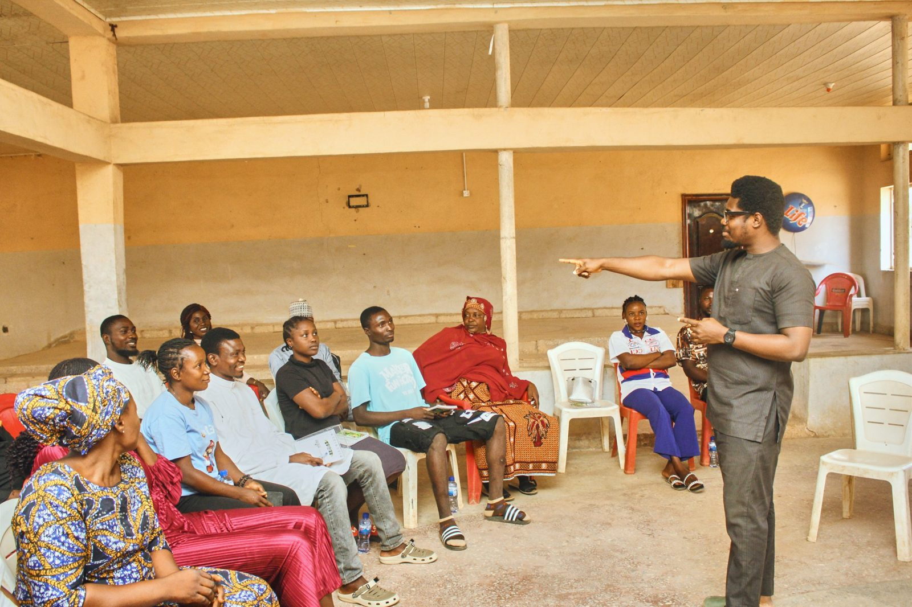
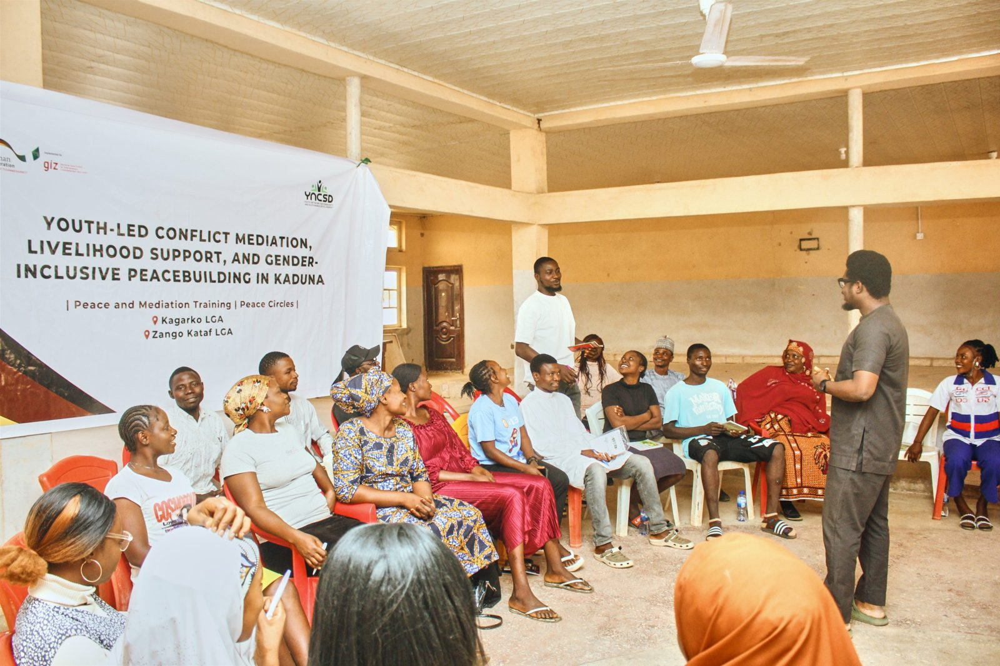
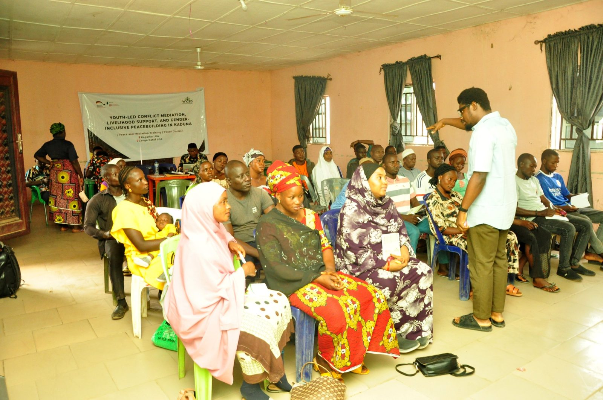
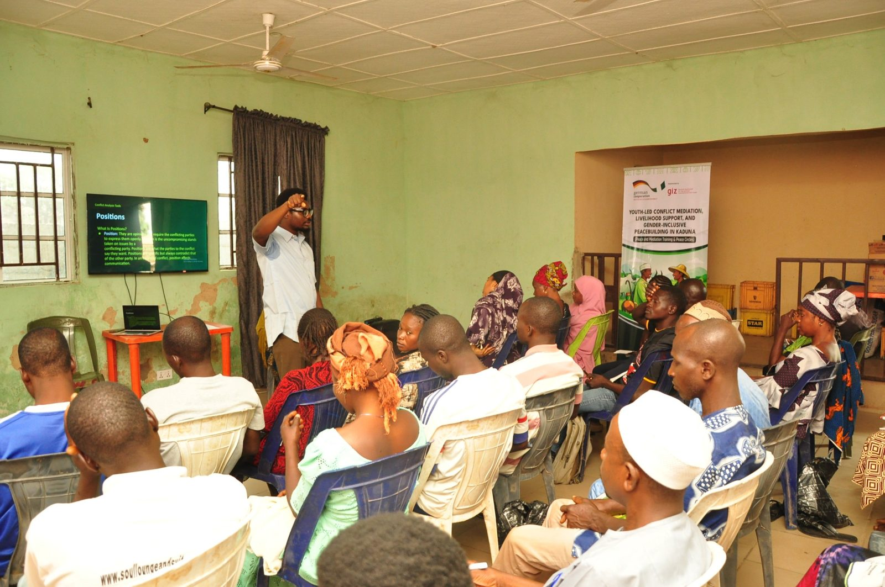

Peace and conflict mediation
Practical grounding in mediating conflict, including tools for analysing it.
Supported by BMZ through GIZ Nigeria & ECOWAS
Peace and conflict mediation trainings for young people across 10 communities in Kagarko and Zango-Kataf Local Government Areas (LGAs), Kaduna State.
The training integrated sexual and reproductive health and rights (SRHR) and sexual violence in conflict settings into peace and conflict mediation, so that participants could approach mediation with sensitivity and inclusivity.
I facilitated peace and conflict mediation trainings for young people across 10 communities in Kagarko and Zango-Kataf LGAs, empowering them to act as youth mediators for their respective communities.
The sessions combined conflict analysis with attention to SRHR and sexual violence in conflict settings, helping participants consider how mediation can be carried out with greater sensitivity and inclusivity.




Practical grounding in mediating conflict, including tools for analysing it.
Integration of SRHR and sexual violence in conflict settings into the mediation training.
Empowering young people to serve as mediators for their respective communities.
This training was supported by the Federal Ministry for Economic Cooperation and Development (BMZ) through GIZ Nigeria & ECOWAS and Deutsche Gesellschaft für Internationale Zusammenarbeit (GIZ) GmbH.
Peacebuilding and conflict mediation training · Gender-inclusive facilitation · Youth empowerment · SRHR and sexual violence in conflict settings · Community-level training delivery.
← Back to facilitation